(2007-07-16 22:14:16)
如果真明白了前面的，这课就不必再说了。本ID反复强调，本ID理论的关键是一套几何化的思维，因此，你需要从最基本的定义出发，而在实际操作的辨认中，这一点更重要。所有复杂的情况，其实，从最基本的定义出发，都没有任何的困难可言。【韶山映山红】遇到困难的时候就回到最基本的定义。缠师的实例解读可能有错误，最基本的定义可以坚守。】
例如，对于分型，里面最大的麻烦，就是所谓的前后K线间的包含关系，其次，有点简单的几何思维，根据定义，任何人都可以马上得出以下的一些推论：
1、用[di,gi]记号第i根K线的最低和最高构成的区间，当向上时，顺次n个包含关系的K线组，等价于[maxdi,maxgi]的区间对应的K线，也就是说，这n个K线，和最低最高的区间为[maxdi,maxgi]的K线是一回事情；向下时，顺次n个包含关系的K线组，等价于[mindi,mingi]的区间对应的K线。【韶山映山红】这里要注意“顺次n个”，因为包含不符合传递律。】
2、结合律是有关本ID这理论中最基础的，在K线的包含关系中，当然也需要遵守，而包含关系，不符合传递律，也就是说，第1、2根K线是包含关系，第2、3根也是包含关系，但并不意味着第1、3根就有包含关系。因此在K线包含关系的分析中，还要遵守顺序原则，就是先用第1、2根K线的包含关系确认新的K线，然后用新的K线去和第三根比，如果有包含关系，继续用包含关系的法则结合成新的K线，如果没有，就按正常K线去处理。
【韶山映山红】从已知的一些函数依赖，可以推导出另外一些函数依赖，这就需要一系列推理规则，这些规则就是Armstrong 公理。
设U是关系模式R的属性集，F是R上成立的只涉及U中属性的函数依赖集。函数依赖的推理规则有以下三条：
自反律：若属性集Y包含于属性集X，属性集X包含于U，则X→Y在R上成立。(此处X→Y是平凡函数依赖)
增广律：若X→Y在R上成立，且属性集Z包含于属性集U，则XZ→YZ在R上成立。
传递律：若X→Y和Y→Z在R上成立，则X→Z在R上成立。
其他的所有函数依赖的推理规则可以使用这三条规则推导出。】
3、有人可能还要问，什么是向上？什么是向下？其实，这根本没什么可说的，任何看过图要大一的都知道什么是向上，什么是向下。当然，本ID的理论是严格的几何理论，对向上向下，也可以严格地进行几何定义，只不过，这样对于不习惯数学符号的人，头又要大一次了。
假设，第n根K线满足第n根与第n+1根的包含关系，而第n根与第n-1根不是包含关系，那么如果gn>=gn-1，那么称第n-1、n、n+1根K线是向上的；如果dn<=dn-1，那么称第n-1、n、n+1根K线是向下的。
有人可能又要问，如果gn<gn-1且dn>dn-1，算什么？那就是一种包含关系，这就违反了前面第n根与第n-1根不是包含关系的假设。同样道理，gn>=gn-1与dn<=dn-1不可能同时成立。
上面包含关系的定义已经十分清楚，就是一些最精确的几何定义，只要按照定义来，没有任何图是不可以精确无误地、按统一的标准去找出所有的分型来。
注意，这种定义是唯一的，有统一答案的，就算是本ID，如果弄错了，也就是错，没有任何含糊的地方，是可以在当下或任何时候明确无误地给出唯一答案的，这答案与时间无关，与人无关，是客观的，不可更改的，唯一的要求就是被分析的K线已经走出来。
从这里，本ID理论的当下性也就有了一个很客观的描述。为什么要当下的？因为如果当下那些K线还没走出来，那么具体的分型就找不出来，相应的笔、线段、最低级别中枢、高级别走势类型等就不可能划分出来，这样就无从分析了。而一旦当下的K线走出来，就可以当下按客观标准唯一地找出相应的分型结构，当下的分析和事后的分析，是一样的，分析的结果也是一样的，没有任何的不同。因此，当下性，其实就是本ID的客观性。
有人可能要问，如果看30分钟图，可能K线一直犬牙交错，找不到分型。
这有什么奇怪的，在年线图里，找到分型的机会更小，可能十几年找不到一个也很正常，这还是显微镜倍数的比喻问题。确定显微镜的倍数，就按看到的K线用定义严格来，没有符合定义的，就是没有，就这么简单。
如果希望能分析得更精确，那就用小级别的图，例如，不要用30分钟图，用1分钟图，这样自然能分辨得更清楚。
再次强调，用什么图与以什么级别操作没任何必然关系，用1分钟图，也可以找出年线级别的背驰，然后进行相应级别的操作。看1分钟图，并不意味着一定要玩超短线，把显微镜当成被显微镜的，肯定是脑子水太多了。
从分型到笔，必须是一顶一底。那么，两个顶或底能构成一笔吗？【韶山映山红】两个顶能构成一笔吗？或者两个底能构成一笔吗？。】
这里，有两种情况，第一种，在两个顶或底中间有其他的顶和底，这种情况，只是把好几笔当成了一笔，所以只要继续用一顶一底的原则，自然可以解决；第二种，在两个顶或底中间没有其他的顶和底，这种情况，意味着第一个顶或底后的转折级别太小，不足以构成值得考察的对象，这种情况下，第一个的顶或底就可以忽略其存在了，可以忽略不算了。
【韶山映山红】从完全分类的角度看，两种情况可以细分成4种具体情况：1.1，两个顶，中间有一个底；1.2,两个底，中间有一个顶；2.1，两个顶，中间没有底；2.2，两个底，中间没有顶。其他情况都可以分解为这4种具体情况。
第一种情况1.1和1.2可能“把好几笔当成了一笔”，处理方法就是“用一顶一底的原则”判断是否成笔。
第二种情况2.1和2.2的处理方法包括了两部分，一是这一段说的“第一个的顶或底就可以忽略其存在了，可以忽略不算了。”二是下一段文字所说的“就可以严格地说，先顶后底，构成向下一笔；先底后顶，构成向上一笔。”这个“先顶”是2.2说两个底能不能成笔的情况，忽略第一个底，前面的顶和第二个底“先顶后底，构成向下一笔；”“先底”是2.1说两个顶能不能成笔的情况，忽略第一个顶，前面的底和第二个顶“先底后顶，构成向上一笔。”
综上所述，缠师所说的两个顶或底能不能成笔，实际上是说笔延续的问题。第二种情况如下图所示。】
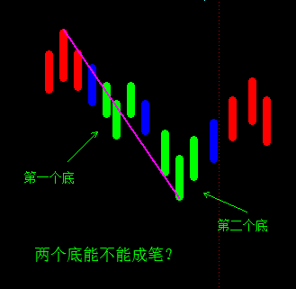
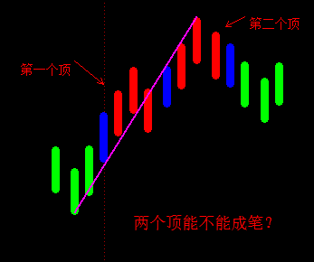
【韶山映山红】“第一个顶或底后的转折级别太小，不足以构成值得考察的对象，”第一个顶或底后必然转折，否则也就不称其为顶或底，“不足以构成值得考察的对象”是说顶后没有形成符合要求的底、底后没有形成符合要求的顶，然后又一次转向继续原来的走势。】
【韶山映山红】什么是“值得考察的对象”？顶或底成立，但是需要判断是否参与构成笔，这样的顶或底才是“值得考察的对象”。“不足以构成值得考察的对象”就是那些不成立的顶或底。因为任意三根相邻K线的完全分类有四种：顶分型、底分型、上升K线、下降K线。所以有很多不值得考察的顶或底。】
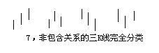
所以，根据上面的分析，对第二种情况进行相应处理（类似对分型中包含关系的处理），就可以严格地说，先顶后底，构成向下一笔；先底后顶，构成向上一笔。
而所有的图形，都可以唯一地分解为上下交替的笔的连接。
显然，除了第二种情况中的第一个顶或底类似的分型，其他类型的分型，都唯一地分别属于相邻的上下两笔，是这两笔间的连接。
用一个最简单的比喻，膝盖就是分型，而大腿和小腿就是连接的两笔。
【韶山映山红】关于顶分型、顶分型如何取舍的问题，缠师有具体的实例展示，在《教你炒股票69：月线分段与上海大走势分析、预判》(2007-08-09 23:03:22)。】
有了笔，那么线段就很简单了，线段至少有三笔，线段无非有两种，从向上一笔开始的，和从向下一笔开始的。
对于从向上一笔开始的，其中的分型构成这样的序列：d1g1d2g2d3g3…dngn（其中di代表第i个底，gi代表第i个顶）。如果找到i和j，j>=i+2,使得dj<=gi,那么称向上线段被笔破坏。【韶山映山红】这里是“线段被笔破坏”的数学定义，不是说第一笔，而是任何一笔。当j=i+2的时候，是线段破坏第一种情况的笔破坏。当j>i+2的时候，是线段破坏第二种情况的笔破坏，也就是封闭特征序列缺口。】
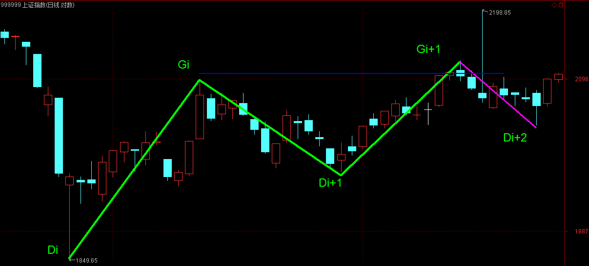
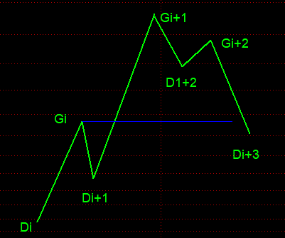
对于从向下一笔开始的，其中的分型构成这样的序列：g1d1g2d2…gndn（其中di代表第i个底，gi代表第i个顶）。如果找到i和j，j>=i+2,使得gj>=di,那么称向下线段被笔破坏。
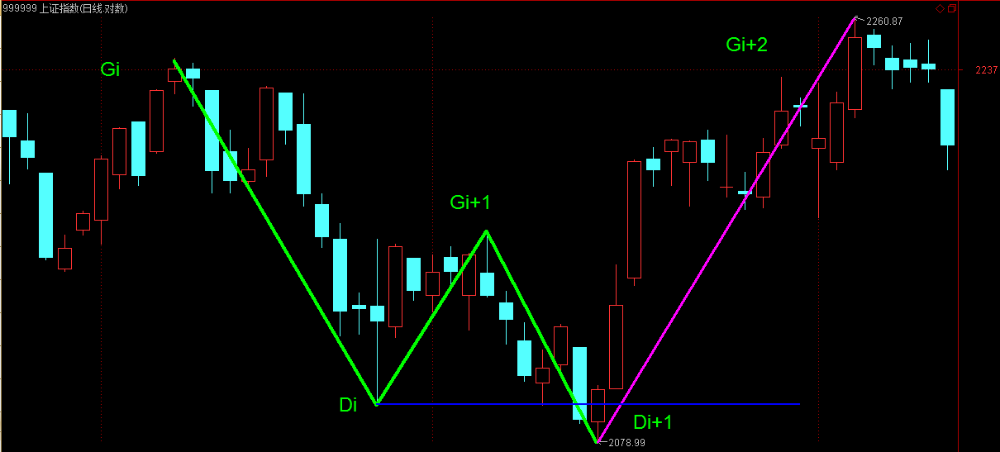
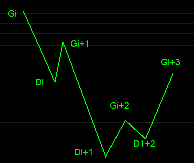
线段有一个最基本的前提，就是线段的前三笔，必须有重叠的部分，这个前提在前面可能没有特别强调，这里必须特别强调一次。线段至少有三笔，但并不是连续的三笔就一定构成线段，这三笔必须有重叠的部分。【韶山映山红】线段至少有三笔。前三笔必须有重叠的部分。前三笔不重叠又是什么样子的呢？★这里约束的其实是线段的起笔，向下线段起于向下笔，向上线段起于向上笔，就没有前三笔重叠不重叠的问题了。】
由上面线段被笔破坏的定义可以证明：
缠中说禅线段分解定理：线段被破坏，当且仅当至少被有重叠部分的连续三笔的其中一笔破坏。而只要构成有重叠部分的前三笔，那么必然会形成一线段，换言之，线段破坏的充要条件，就是被另一个线段破坏。【韶山映山红】这时候的线段分解还强调线段的破坏一定要有笔破坏。后面的进化，第二种情况就不一定有笔破坏了。★】
以上，都是些最严格的几何定义，真想把问题搞清楚的，就请根据定义多多自己画图，或者对照真实的走势图，用定义多多分析。
注意，所有分析的答案，只和你看的走势品种与级别图有关，在这客观的观照物与显微镜倍数确定的情况下，任何的分析都是唯一的，客观的，不以任何人的意志为转移的。
如果分型、笔、线段这最基础的东西都没搞清楚，都不能做到在任何时刻，面对任何最复杂的图形当下地进行快速正确的分解，说要掌握本ID的理论，那纯粹是瞎掰。【韶山映山红】现在的阉版缠论太多，有些人没搞清楚线段，就说没有用。夏虫不可语冰。缠师在这里强调：线段是缠论神圣不可分割的一部分。】
明天暂不出差，先下，明天见。
2007-7-16 22:15
(2007-07-17 15:40:05)
昨天晚上才临时决定不出差了，而大盘也在昨天的一退后，给自己留出了再进的空间。
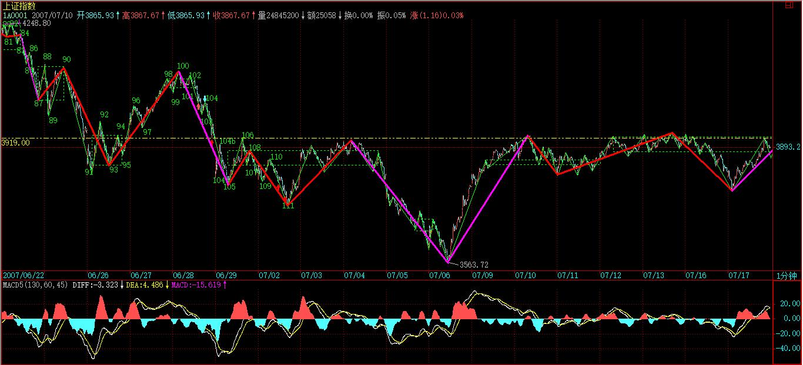
本ID在前面已经反复说过，现在就是要在震荡中把人气汇聚。市场，最重要的就是人气，只要有人气，其他都不是问题。人气汇聚，人心修复，这就是多方在技术与基本面极端不利的条件下，唯一能干的事情。而技术，都是合力的结果，只要人气改变，合力自然就变，技术面就会改变过来。
各位大概已经发现，在昨天和今天的一退一进间，日的MACD已经金叉了，当然，这金叉需要确认，但至少让完全不利于多头的技术面有了一线生机。为了这线生机，付出的努力太惨烈了。
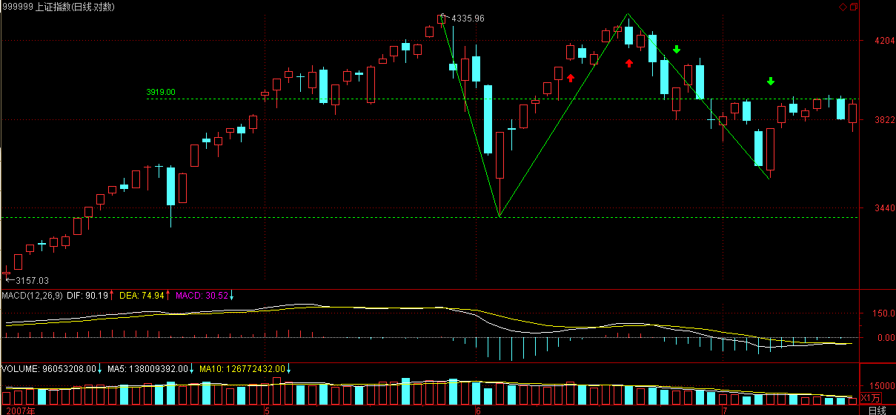
目前，所有的中短期均线都缠绕在3900上下，这在技术上就完全具备了变盘的条件，
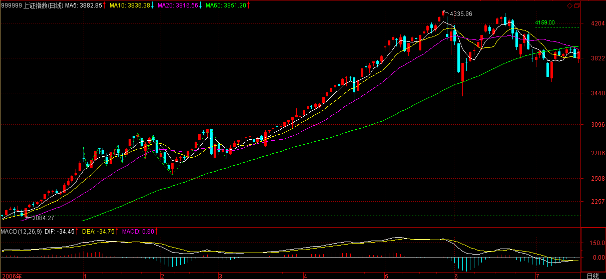
现在，可谓万事具备，只欠东风，而这东风，就是某些利空的兑现。现在，市场就需要某些利空的兑现来让靴子落地，让空头整天忽悠的那些火星人都知道的利空去兑现，兑现了，就不是事了，而人气与走势，就可以形成有利多方的正反馈了，一旦这正反馈形成，空头就可以一边凉快去了。
当然，正如本ID一直强调的，现在的一切，都有利于空头，多方现在的努力，只是无中生有，逆势而为，其困难可想而知，路还很长，但只要走了，只要有人走了，路，总有一天会走出来的。
至于政策面，一旦走势与人气回来，政策面也是可以改变的，政策，不过是合力的一部分，政策，不是天上掉下来的，也脱离不了现实。
所以，现在多方从事的，是一项大的系统工程，要在技术、人气、心理、政策等等方面，把本来完全有利于空头的局面彻底扭转。正若本ID一早所说，只要有1%的可能，就要付出100%的努力。
个股方面，本ID在前面已经十分明确地反复指出了，就是两类，第一是300成分股，这会出现轮动，例如今天的房地产动了，过两天可能就换别的，这就是轮动。轮动是带动人气的基本方法，这点在前面已经说得很清楚了。第二种就是经过充分调整的，有题材有潜力的中低价股，这类股票，本ID也说了，现在正在收集、换防中，要动态建仓。
当然，如果这次多方努力失败，成分股会有比较大的补跌风险，这是必须注意的。不过，谁说多方就一定要失败的？为什么不可以多方大胜，结果成分股又走出一轮波澜壮阔的行情？本ID身在此山中，也不能也不必多说了。
还有事，必须先下了，再见。
(2007-07-17 22:34:40)
回来晚了，累，不想写文章。不如就出道题考考各位。顺便说句，昨天的课程应该是65，匆忙中搞错了，已经更正。
请各位看看下图，里面有12种走势，其中每种走势中的每一划都代表实际走势中的一笔，请问，里面构成一线段走势的有多少种？换一种问法，就是有多少个图是不构成一线段，有多少个图刚好是一线段，有多少个至少是2个线段的连接？
出题考考各位，有空的都请进来。
【韶山映山红】北京草图。】
问题很简单，请各位仔细分辨，这些图形，在实际走势中都会经常碰到的。另外，像分型、笔、线段这些的分辨，只能根据定义，不断看图，熟能生巧，没有任何其他办法。这是有标准答案的东西，定义就是权威，其他一切都没意义。
还有，根据最严格的定义，对背驰等概念，一定要存在最低级别的中枢后，才有最低级别的走势类型，才会有背驰等概念的存在，一般来说，在线段之下讨论背驰概念是没意义的，但可以根据类似背驰的力度比较方法来讨论线段之下类背驰的现象，但这和背驰是两回事情。【韶山映山红】在哪些方面是“两回事情”？★笔和线段划分的规则都不同于走势类型，特别是放弃了中枢在里面的价值。类背驰带来的走势变化，在笔线段规则下，不一定被反映。★以后研究。】
【韶山映山红】为什么没有意义？什么前提下才有意义？】
而用区间套的方法，在定位线段之下的精确买卖点时，实际上用到的就是类背驰的力度比较，一般来说，对于大资金，其精确定位不需要用到线段之下的，例如1分钟甚至30分钟级别的区间，对于大资金就是精确定位了。当然，对于散户来说，用类背驰的方法，甚至可以把定位定到精确的分笔图上某个价位，但这在实际操作中没多大意义，特别对通道不顺的散户，就算你看到那价位，也不一定能买卖到。因此，不要用太低级别去操作，这样太累，特别在交易成本大幅度增加的今天，更没意义。【韶山映山红】缠师的意思，我们散户应该用类背驰的力度比较方法“定位线段之下的精确买卖点”。】
好了，本ID要休息了，各位有时间就回答问题吧，再见。
(2007-07-18 15:47:50)
前几天，本ID写了“无论多空，都必须要退的一步。”，今天却要写“无论多空，都必须要进的一步。”这一进一退间，正好说明了本ID所说的路之艰难。而今天的走势，就是现在多空对战的一个最好演绎。
由于在多方的反复努力下，昨天在技术面上出现日MACD的金叉，使得今天的突破成了必然。
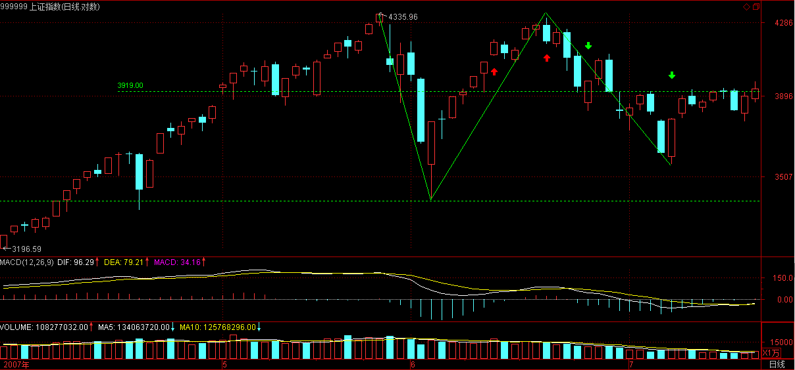
现在，不妨让本ID换了身份，如果本ID是空头，本ID要阻击多方的进攻，最简单的就是先让一步，利用4000点和60天线的心理屏障，通过震荡，破坏日MACD的金叉信号，最终让金叉变死叉，如果本ID是空头，一定是这样干。否则，在技术面金叉情况下一味在3919点颈线下打压，只能让多方高兴，空头最不利的，当然就是在技术面转向多方时在低位损失打压的筹码。
而对于本ID的多方立场，如果不利用技术上的金叉信号进行颈线的突破，那前面的震荡都白搞了，因此，突破是必须的，至于突破是否有效，这是后话，突上去再说。而突上去后，对于多方，需要对3919点的颈线进行反抽，而空方，需要出手打压制造假突破，因此，下午的回落，同样是多空双方都乐意看到的。细心的投资者一定发现，下午回落的最低点，刚好是本ID在N周前就开始反复强调的3919点。
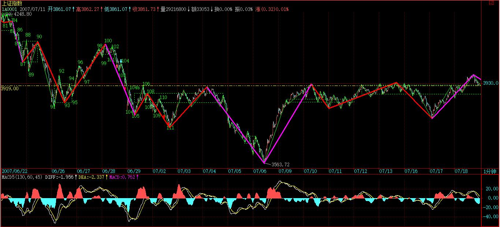
现在，对于短线走势，消息面有着决定性的意义，在技术上，对颈线突破后需要三天的回抽确认，而刚好本周的最后两天和下周第一天是消息面上最大的动荡期，技术与消息，在这里产生完美的碰撞。
本ID虽然站在多方立场上进行战略部署、战术安排，但对空头的所有伎俩，当然也分析得底朝天。站在大的角度，本ID也可以分析一下空头可以采取的最好策略，就是同样搞三角形，但这三角形和本ID为代表的多方要搞的不同，对于本ID来说，现在是三角形的第四段，而对于空头来说，现在是他们的三角形的第三段，就是这三、四之争，将构成后面技术上的最大分歧。多方搞的三角形，最后是要往上突破的，而空头搞的，是要往下突破的。【韶山映山红】这里说的三角形是4335开始的下上下上，第四个上走水平了，所以缠师说三四之争。】
今天，一个多空共同合力下走出的完美图形，而明天开始，这种一致将被打破，而关键之处，就在消息面的配合。
个股方面，今天成分股的轮动有了新的发展，但还没把人气充分激发，更多的股票里的人，都采取观望，甚至有些还采取借机逃跑的策略，这都是正常的。天上打架，没打出结果，下面的当然只能这样了。一旦天上打架有了结果，地下的自然就有了方向。主力、庄家的资金，也是分级别的。
对于散户来说，本ID已经说得很明确了，在有效站稳目前在4159点的1/2线之前，都以震荡行情看待，按自己的级别，顶背驰出，底背驰买，这样就不会左右挨巴掌。【韶山映山红】7月的1/2压力线是4159。】
有事忙，先下，再见。
(2007-07-18 21:09:33)
有急事紧急出差，本来早要去的，推迟了，今天不得不去。最后一班，机型还是今天巴西毁掉那种，本ID受飞机煎熬，各位就继续收中国队的煎熬吧。
【韶山映山红】空中客车A320。2007年7月17日在圣保罗孔戈尼亚斯机场降落时滑出跑道，撞上机场外的加油站，起火燃烧，造成198人死亡。】
【韶山映山红】2007年7月18日，亚洲杯小组赛，中国vs乌兹别克斯坦，0:3完败。又是一次打平就可以出线，又是一次梦幻般的开局，同样又是一次噩梦般的结果......这就是典型的中国足球。】
问题的答案：都是一线段，不明白的以后有时间再解释。明天见。

出题考考各位，有空的都请进来。
(2007-07-19 15:29:28)
其实，无论本ID出差还是在北京，和各位的距离都是相等的，也就是一层网络而已。所以，虽然每次本ID出差，大盘就有病一般，但本ID利用战事的空闲处，也要干点别的事情，二级市场的事情，不是光二级市场决定的，所谓工夫在诗外矣。
现在科技那么发达，在哪里看盘都一样，别说深圳了。本ID在N多年前，就熟悉深圳的大小证券部，里面留下无数故事，有时候只能说给星星听了。在这样一个等待利空落地的日子里，说点闲话也不是多余的。
但，就算在这样一个日子里，汉奸鬼子还没罢休。
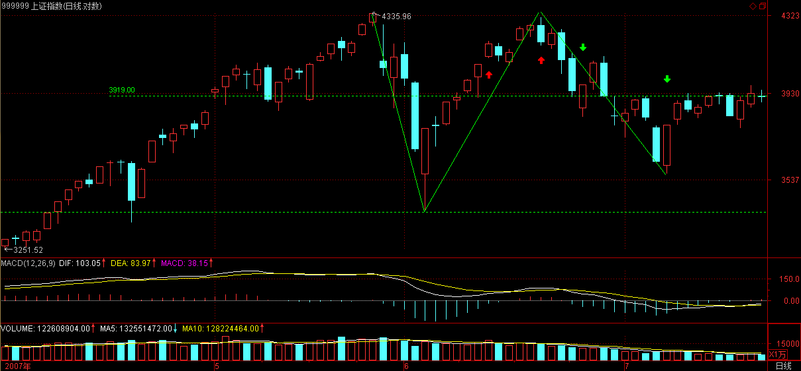
看看尾盘最后十来分钟的窄幅波动，斗争一直到最后1秒。

有时候，真觉得这种事情有点无聊，至于吗，汉奸鬼子们？最后几分钟不晃悠一下，你们会死呀？当然，这也是可以理解的，换着本ID当空头，只会更残忍。
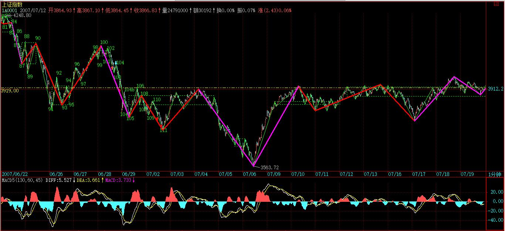
现在，其实没什么可说的，在等待利空落地的日子里，大家就去倾听那落花飘落的声音，本ID有足够的耐心，等待那些火星人都知道的利空影子一样摔碎。所有爱当捕风蚊子、捉影苍蝇的，就继续吧！
虽然，写相信未来的人，最后成了疯子，但并不需要疯子才可以相信未来。【韶山映山红】《相信未来》作者郭路生，笔名食指，朦胧诗鼻祖。】
特别对中国资本市场的未来，可以断言的是，所有用最疯狂的愚昧去断送中国资本市场前途的人，无论是谁，都只能是民族和历史的罪人。
在外，课程没法写了，但还是可以继续考考各位的学习程度的，今天又来一道题目，下面，每一划依然代表实际的笔，请问，站在线段的角度，这两者是否相同？为什么？

在等待利空落地的日子里
各位就请好好回答问题，回答不出的，就请继续学习。本ID要忙去了，先下，再见。
tryrtytry
不同，前面的那个多折的部分是线段中枢震荡，所以前面的是一线段，而后面的那个多折的部分高点是两线段的分界点，后面的线段对前面的线段予以了破坏，所以后面的是三线段．
2007-7-19 15:49
(2007-07-20 08:26:20)
刚起来，下午收盘马上有事，盘是解不了了，周六、日有空再补上。反正在外面，音乐会也没法开。
刚才扫描了一下回帖，很多网友的答案都是对的，
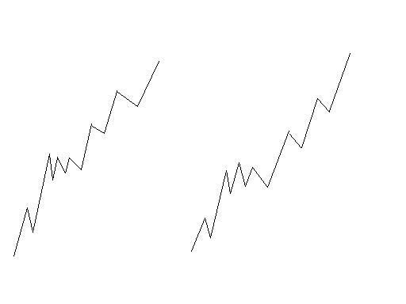
在等待利空落地的日子里
站在线段角度，那两图是有本质的区别的，但如果里面的每一划不是笔而是线段，那么这两图就是没区别的。【韶山映山红】都是一个中枢的盘整走势。两端是次级别走势的延伸。右图不再是趋势+盘整+趋势的三段。】
这是为了说明，笔、线段，和中枢、走势类型是有区别的。
笔、线段是为了在实际操作中构成最小级别的中枢，在笔和线段中，连中枢都谈不上，只能用类似中枢以及相应的背驰力度方法去确认笔与线段的结束，但这只是类似，并不是说笔与线段里就真有什么中枢与背驰。
严格意义上说，把线段当成最小级别走势类型的次级别是不对的，当然，在不严格的意义上，可以类似地这样认为，但两者是有本质区别的。这两个图就区分出两者的区别来了。【韶山映山红】缠师从这一课开始，明确把线段归入初始化函数了。】
请注意中枢的递归定义的存在性意义，与分型、笔、线段的操作性意义的区别。
当然，如果我们能找到交易中每一分笔（注意，不是上面说的笔，而是实际交易中的每一分笔）的成交，然后按照递归定义，就可以构造出整个走势类型与中枢的级别序列来，但这没实际操作意义，只是理论上的。
而分型、笔、线段，并没有违反中枢的递归意义，只是用一种方法来确认具有操作意义的最小级别中枢与走势类型，其后的一切，依然按照递归的定义来。【韶山映山红】严格意义上的递归，是成交的每一笔组成K线，直接形成中枢，然后递归。为了可操作性选用1分钟图，可以理解。为什么需要分型、笔、线段这样的概念？或者进一步说，为什么有线段这样的规则？★没有交代，只说过这样可以消灭偶发因素的影响。★可以做个专题，以后研究。】
如果对数学有点了解的就知道，两者在递归的形式上是一样的，都是an=f(an-1)，唯一不同的就是预先给出的a0，纯理论上的，这a0就是从每一分笔的成交开始的，但这没有实际可操作性；所以，就要用分型、笔、线段来确认这个a0。而站在递归的程序上，这两者没有本质区别。【韶山映山红】都属于递归函数，只是规则不同。 初始化函数是分型的函数。a1=F（a0），其中a是分型。笔＝Ｆ（K线分型）。线段=F（笔分型）。 递归函数是走势类型的函数。an=F（an-1），其中a是走势类型。】
其实，这些都是最简单的数学，除了孔男人类的，全宇宙的人都应该明白。

【韶山映山红】文字版的公式没有字母的大小，这样是不是更清楚？】
【韶山映山红】西门学缠的博客
《缠论的递归函数--108课之外的博文 》 (2011-07-24 14:16:52)
缠论教你炒股票65课之后有2篇博文，原博文地址：
http://blog.sina.com.cn/s/blog_486e105c01000brc.html
http://blog.sina.com.cn/s/blog_486e105c01000bs4.html
阐述了缠论的数学核心递归函数，中枢的递归定义的存在性意义和笔线段的操作性意义的区别。不看缠原博学缠的人是不会看到这些重要内容的。
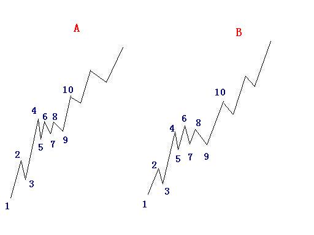
这道题今天再看，还是很有意思的。如果按线段定义去看，1线段和3线段。但是换个角度去看，比如这就是个股分时图，这两图的走势到底有啥区别？对于超短线来讲，这两图的力度是有区别的。从笔中枢的角度来讲，2个调整都形成中枢，是否理解成2个不同级别的中枢更利于操作呢？因为操作来讲，假设你前一天已经买入这股票，今天走到4的时候如何操作，走到9如何操作。而这两个调整在4之后你不知道后续会走成什么样的，小转大多得很。 这也就是我们学了缠论的线段之后，又开始进行超短线操作的重大问题。线段大部分情况下对于超短线来讲都是级别过大了点，也就是说你做用缠论做超短线时，你的a0是需要变化的。图A的1-4之后是6不创新高，小级别转大级别；图B的1-6就是一个趋势，背驰后走个6-9的盘整，之后再上。那么，如果从中枢角度出发，两图的4-9的中枢级别有大小区分吗？如何感知这两图的走势分别呢？强度分别？这需要我们参！这也许就是手上有牛股时是否能把持住的关键。
由此看出，光会线段是不足以进行好的超短线操作的。】
还有，本ID画图只是随手画，但市场的图是合力的结果，不是任何人可以随手画的，要真把握本ID的理论，不预测、只看当下走势，这是必须首要记住的。
听说黄油蟹当季节了，可惜没有菊花酒可以对影成三人。【韶山映山红】黄油蟹是粤港地区的名贵蟹种，难怪缠师弟弟骂她太奢华。李白《月下独酌四首·其一》：花间一壶酒，独酌无相亲。举杯邀明月，对影成三人。月既不解饮，影徒随我身。暂伴月将影，行乐须及春。我歌月徘徊，我舞影零乱。醒时相交欢，醉后各分散。永结无情游，相期邈云汉。】
先下，明后两天有时间再见。
(2007-07-20 21:33:08)
在车上和各位打招呼，今天的走势无须多说，今天的消息也说得太多，该来的都来了,你还需要什么?
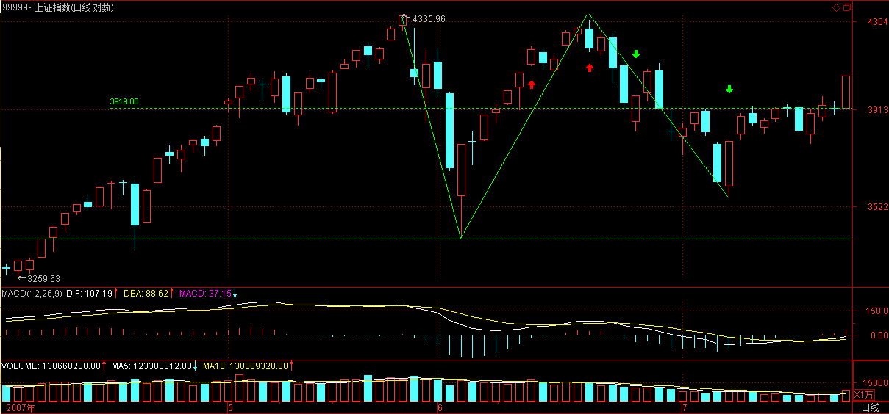
当然，空头没有完全打死，本ID需要痛打落水狗，因为本ID知道，有些狗不打死，就要咬人，如此而已。
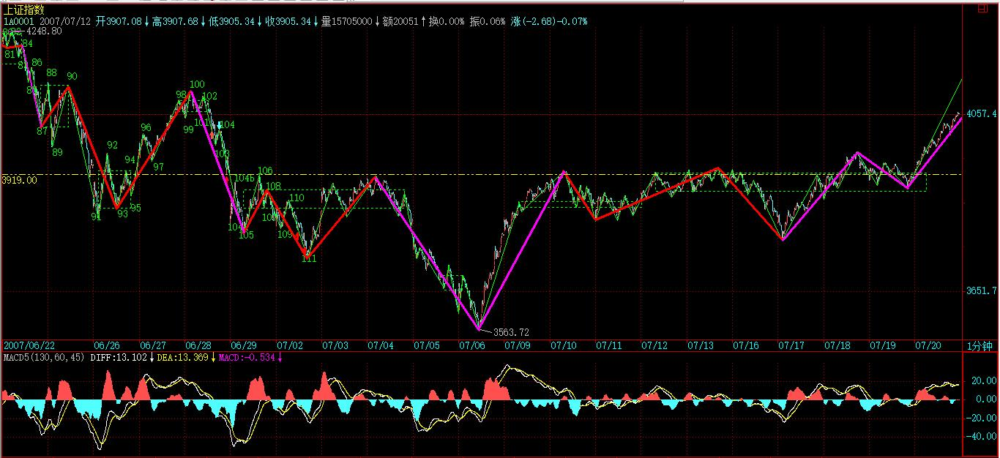
一切不用多说，本ID喜欢干，不喜欢说。干的已经成为历史，永远K线了，如此而已。
周末，腐败去吧，本ID还要忙，今晚的黄油蟹不错，可惜没有菊花酒。
先下，再见。
(2007-07-23 15:25:57)
对不起，这两天确实太忙，没有新帖子，趁着收盘说两句。
其实今天的走势，没什么可说的，周末，本ID在这里已经明确说了，要痛打落水狗。有些狗般的思维不是说要低开吗？不是说有回补的机会吗？当然，本ID尊重这种思维。但按本ID痛打落水狗的思维，就是没有低开，没有回补的机会。要回补可以，当轿夫吧！
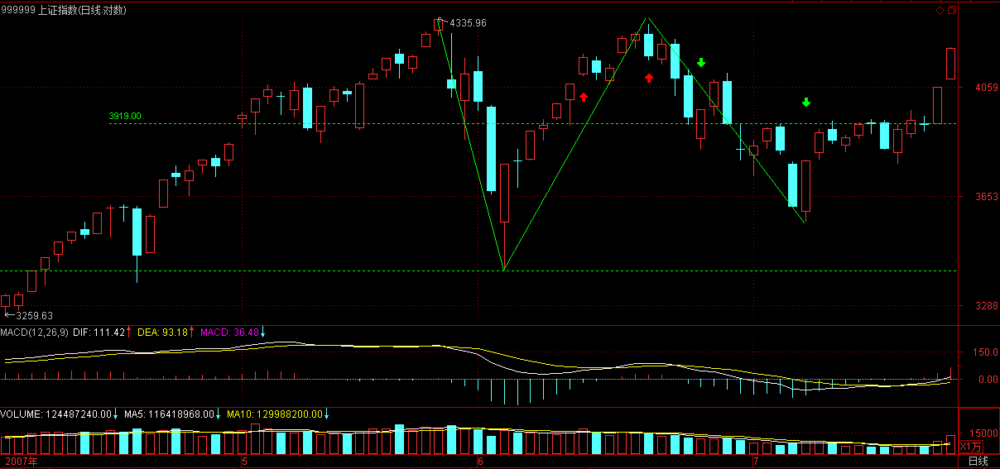
当然，这里说的是那些在3600点下狂砸诸如中石化等要把多方弄死去舔他们主子的洋狗，这次激战，在这里全程直播了，就像春节前后那次，最后，一阵打狗棒下，星火正燎原。
本ID在开战时就说了，本ID只点火，本ID不当解放军，但一旦星火燎原，解放军自然就来。好了，本ID该干的已经干了，后面，就看有多少草可以燎原了。对于多方来说，现在已进退自如。对于本ID，拂身白云外，回首大江横，点火事了，谁爱当火炬手就当去吧。

技术上，4159点的1/2线将决定整个中线走势。【韶山映山红】7月的1/2压力线是4159。】
由于二级市场战事已经稳定，本ID将花更多时间去为一个更大的战争作准备。这战争的意义在于，让中国人永远当中国资本市场的主人，而这不是光从二级市场下手就可以的。
好了，事忙，先下。
最后用旧作七律一首结尾--
本地风光本地游
非污非净现头头
缘情天地皆精彩
逐梦英雄总自由
一样兴亡千样戏
这般岁月那般愁
长空倚剑披云啸
散作乾坤碧水流
(2007-07-24 08:46:06)
对不起，今天收盘后解不了盘。有一个N百人参加的腐败活动，忙完，晚上有时间再说。特此说明，免得各位收盘后空等。
(2007-07-25 08:54:22)
对不起，实在太忙，现在刚起来，抓紧时间说说昨天走势。
昨天其实没什么可说的，技术上碰到前面两个高点连线，站在本ID三角形整理的最低要求上，昨天的回落理所当然。
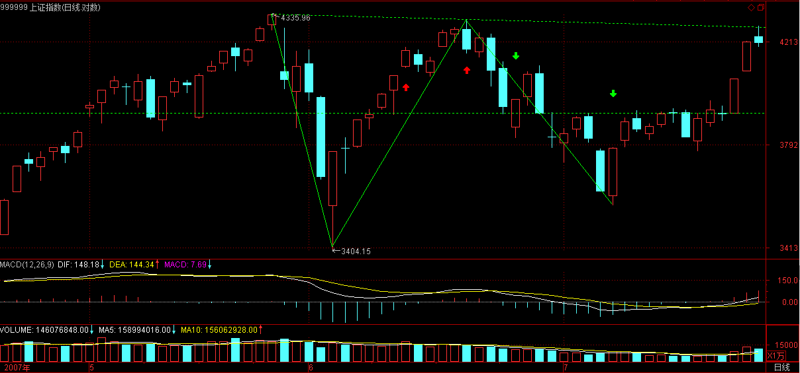
本ID前面说了，现在至少对本ID来说早已进退自如，所以要花多点时间在别的地方。本ID最低的要求就是三角形的第四段，昨天碰到前两高点连线，就完全达到本ID的要求，所以本ID完全不会再作为。
也就是说，如果大盘出现比三角形更好的走势，例如从这里直接突破，对于本ID来说是锦上添花，本ID乐于坐轿子。如果大盘继续按三角形走，出现一个回调的第5段，那么即使大盘重新回到目前位于3700点下的下面两低点连线，本ID也是可以接受的，大不了到时候本ID再出手。
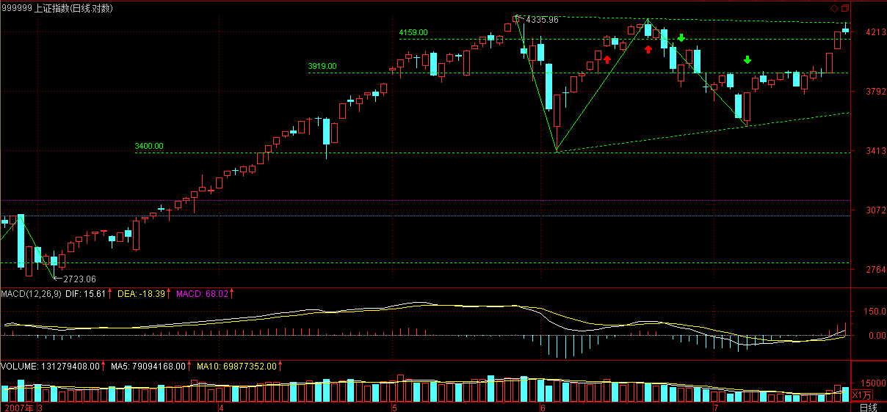
本ID这次出手的目的在出手时已经公开说了，就是不让汉奸鬼子买到便宜的筹码，不让他们平台型的阴谋得逞，现在已经完全达到。本ID的行动，只针对汉奸、鬼子，不当解放军，这也是一大早说了的。而本ID目前的资金、筹码配制，在这两天已经完全调配到符合这种两者皆可的程度。这点，在周一收盘时，本ID已经明确说了“对于本ID，拂身白云外，回首大江横，点火事了，谁爱当火炬手就当去吧。”
站在纯技术的角度，4159点的1/2线是关键，【韶山映山红】7月的1/2压力线是4159。】现在的火炬手们，如果有能力扛住该线，那么大盘将继续创新高，否则就去补缺口，考验4000点支持，甚至考验下面两低点连线。 由于本ID现在已经退居二线，只坐轿子不冲锋，所以以后可以多说技术的问题，分段也可以提供了。当然，前提是本ID有时间。
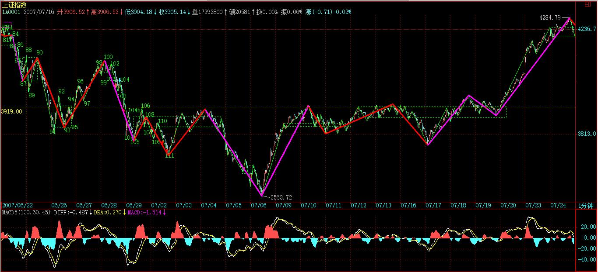
个股方面，本ID那些中长线的面首依然会继续宠信，前提是你要有足够的耐心。例如，像本ID 4月说的6000万总盘，2000万以下流通的深圳新上中小盘，当时一直不动，你看现在的002121，看看是不是符合本ID当时说的中长线价值？大盘震荡下跌这么多，对他又有什么影响？
【韶山映山红】002121科陆电子。】
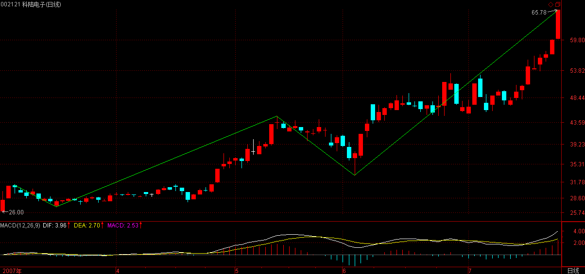
对其它股票也是一样的，面首，有中长线搞才有味道的，整天对股票面首419，小心得爱滋。
中长线运作，专一点，把成本降到0，这才是股票中永远不败之道。
前面说002121，本ID的成本还没到0，经过这1月的运作，也0了，注意，现在各位就千万别买了，30元下不买，现在买，那是有病，只是有的，可以继续按本ID的方法运作下去，成本为0后就是保持0成本增加筹码了。对于其他所有股票，这方法是一样的。
【韶山映山红】002121科陆电子。】
对不起，今天依然忙，收盘后可能没时间解盘。但只要有时间，本ID会上来说两句的。
(2007-07-25 18:31:21)
首先说一句，刚上来，发现系统警告好友数量已经到极限，所以请各位不要再申请本ID为好友，等新浪的数量限制扩大再说。
应酬前，抓紧时间说两句。今天，各路火炬手们都很兴奋，本ID坐轿子，当然要表扬一下抬轿子的。站在纯技术的角度，4159点站稳后，就攻击前期高位，这在昨天和早上都说了。【韶山映山红】7月的1/2压力线是4159。】当然，现在的上攻有点急，但被压抑了许久的多头力量，尽情释放一次，也是无可厚非的。
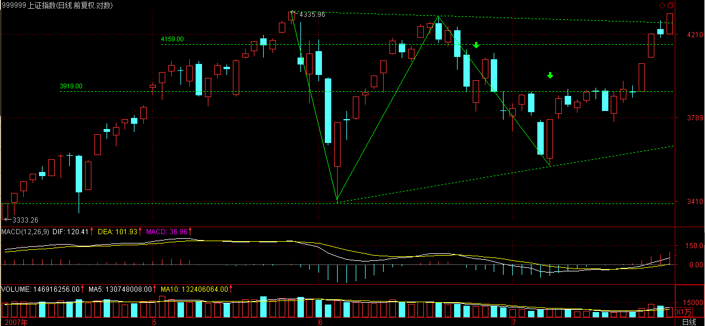
技术上，4335点是否明天突破，【韶山映山红】4335是530的高点。】其实一点意义都没有，早一天晚一天并不重要，【韶山映山红】这一次上涨的开始的力度并不大，所以暂时还处于向上的背驰段，所以突破前高并没有什么意义。】重要的是突破后，在适当的回抽确认后，能释放出更大的能量。【韶山映山红】释放出更大的能量是指非背驰上涨。】否则，就要面临假突破的风险。【韶山映山红】假突破就是新高盘背的情况。】
所以，现在，在技术上，主要要面对这个问题，一旦确认假突破不成立，那么大盘就会走出一段坚定有力的行情；否则，大盘依然有考验4000点等可能。【韶山映山红】盘背就会转折向下，也就也可能再次探底。】是否假突破，是今后两周行情演化的关键点。
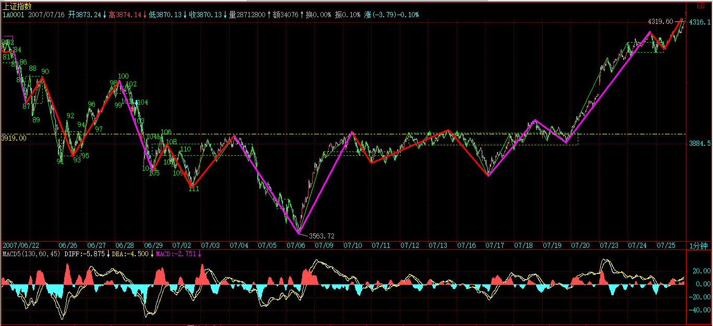
本ID今天早上已经宣告，本ID现在在轿子上，所以绝对不出力了，只会享受本ID应该享受的成果。别人想羡慕也没用，本ID前段时间冒着枪林弹雨换来的成果，当然要好好享受，否则本ID怎么能不断壮大？怎么能在下次出手时更强劲有力？所有如本ID般以抗击外敌为使命的资金的壮大，就是对汉奸鬼子最大的打击，这没什么可说的。
个股方面，本ID前面已经反复说过，先成分股。这几天成分股轮番表演，就是本ID前面说的轮动。目前各路诸侯纷纷上场，互相配合良好，也就是所谓的星火燎原了。至于非成分股，肯定会轮动到的，特别是有题材、基本面支持的，更会有中长线价值。
基本面上，现在最大的努力方向，就是争取单边印花税，全世界，只有香港、深沪、澳大利亚等少数几个市场双边印花税，现在，深沪交易所难道不应该和国际接轨？这次，国际接轨应该成为保护国人利益的武器。那种老让国人不爽的国际接轨已经太多，早该来一次能让国人爽的国际接轨了。
不管什么面，一切都是合力，没有任何上帝，一切都在合力之中，即使没有回报，但该努力的必须努力，3600点汉奸鬼子叫嚣平台型时如此，现在亦如此。
明天，本ID就回北京了，估计又是最后一班飞机，后天才能在北京和各位相见。
北京的天空，无论白天黑夜，也是天空、只是天空而已。
(2007-07-27 08:01:59)
对不起，昨天回京太晚，没写帖子。现在补上。
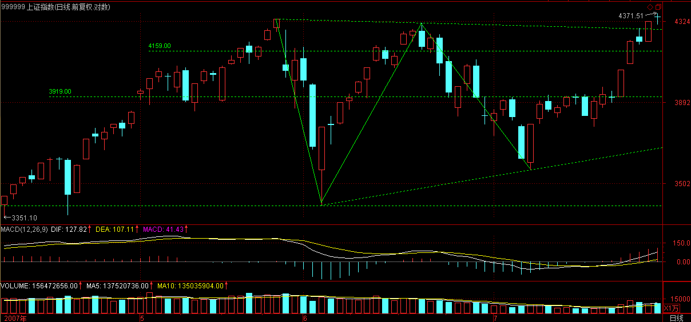
还要道歉一下，在外，只能说股票，其他东西没时间写。回来，下周还是按正常来。
大盘无分歧地创新高，才会导致真正的分歧。
前天说了，现在最大的分歧就在于真假突破。但无论真假突破，突破后的调整、回抽、确认等是必然要发生的。
站在周线的角度，无非四种：一种是本周的上影线调整；二是下周的周K线调整。前者是弱的，后者是强的。当然，还有一种更强的，就是下周继续拉长阳，中间有日的跳水洗盘，再下周才真调整。最强的就是强力夹空，连收N根周阳，全部调整以日线完成。【韶山映山红】这里说的强弱，不是调整力度的强弱，而是上涨力度的强弱。１，这时候是7月27日周五的早晨，“本周的上影线调整”意味着，25日、26日刚刚突破530之前的高点4335点，这一天马上调整，说明阻力就在这个位置，所以偏弱。２，“下周的周K线调整”意味着至少本周还是达成一致的突破，所以是强的。至于下周怎么样，就再看了。３，“下周继续拉长阳，中间有日的跳水洗盘，再下周才真调整”意味着这次突破没有什么大的阻力，更高才有，所以更强。４，“强力夹空，连收N根周阳，全部调整以日线完成”意味着一直没有什么大的阻力，所以最强。】
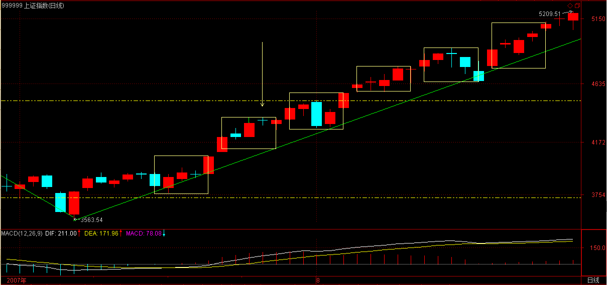
一切都由市场合力决定，只要按本ID的理论当下去判断市场的选择就可以。例如，今天就面临第一种情况是否出现的选择，这由今天当下的走势就可以判断。
从管理层的角度，如果出现第三、四种的走势，那么基本面上的可能变化，例如单边印花等，就会受到更大阻力，站在对股市中长线健康的角度，本ID反对后两种走势。当然，本ID只是市场分力之一，而且，本ID现在轿子坐得舒服，因此这种反对最多是口头上的，如果有哪些无聊的火炬手们一定要搞第三、四种，本ID站在短线利益的角度，确实也没理由反对。本ID唯一可以干的，就是等这些疯狂抬轿子的火炬手抬到没力气时，一棍子把他们打晕，给他们上上市场风险课，配合一下管理层的风险教育。
至于第一、二种，本ID都可以接受，说实在，本ID更喜欢上下震荡，越震荡，差价越多，单边其实没什么意思。
站在纯技术的角度，目前的5日线是判断能否直接真突破的关键，一旦在下周初之前5日线上移到目前位置指数依然不能脱离目前区间，大盘重新回跌的机会就不可避免了。
归纳上述，第二种走势是最有利于多头的，而第一种走势，则给空头一个喘息的机会。至于第三、四种走势，那是纯粹找死，为本ID做嫁衣裳，当然，这世界上想死的人很多，本ID当然也不讨厌这些死都这么有性格的。
对于本ID来说，前两天已经宣布退居二线，所以只会按市场的选择来当下选择自己的操作，而不会主动去引导市场的方向。3700点上，市场爱干什么，什么资金干的，本ID都可以接受。
个股方面，成分股的拉升轮动后，如果没有其他股票的呼应，大盘走势不会太健康，所以各位要看这轮动是否能蔓延，如果不行，那么大盘的走势就要变局。现在的节奏就是一二三，等三线都轮动到了，就看一线是否能重新启动，不行，大盘就要休息了。
下午收盘后，本ID要开始补腐败课，晚上有时间再解盘，先下，再见。
(2007-07-27 23:09:24)
收盘就开始补腐败课，刚回，明天还要继续腐败，周末这两天闲不了。
早上说了，对于多头来说，最好是第二种，今天，在外围股市大跌下，能走成这样，各路火炬手是出力了，搞得本ID都有点怪不好意思的，当然，这也只是口头上，本ID赚钱坐轿子，从来都是心安理得，没什么不好意思的。
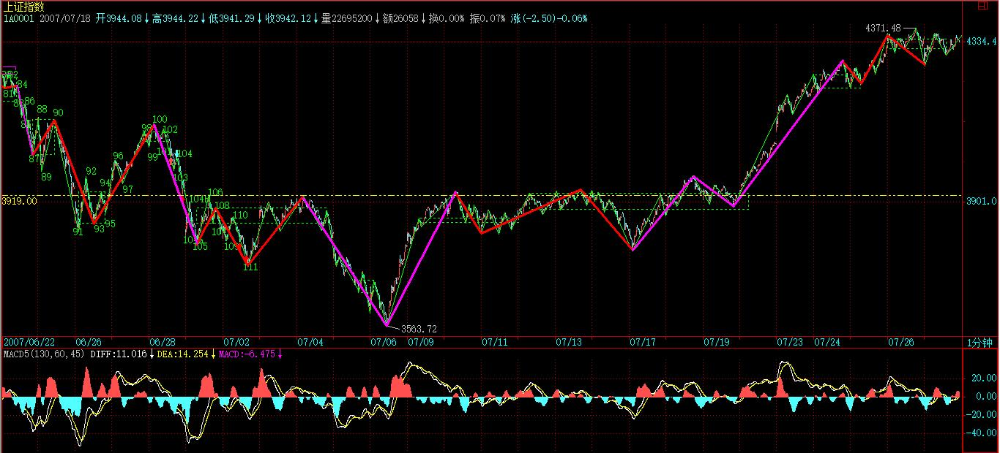
由于各路火炬手很多在4000点以上才逐步重新介入，所以现在火炬手变举重选手的机会大增，下周初就看这些举重选手举杠铃的能力了。举住了，自然更大面积的空翻多，否则，就假突破引发一轮雪崩。
本ID没有举杠铃的爱好，倒是如果某些人举不住，本ID顺势踢上两脚的兴趣更大。当然，如果各路举重选手都能更高更快更强一把，那本ID也乐意在轿子上多晃悠晃悠。
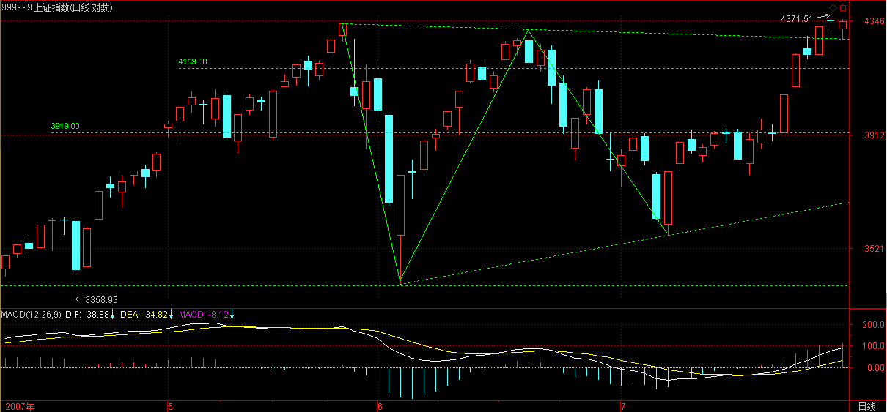
可能有人又要骂本ID卑鄙无耻，为什么光点火不举杠铃，一直冲上去。本ID脑子里还没有水太多，只爱点火，不举杠铃。而且本ID已经多次说过，只要在3700点上，大盘怎么走，本ID都没意见。现在，那些在3600点还鬼哭狼嚎的，突然都成了多头首脑，都在宣称自己以前多么英明神武，多么先知先觉。本ID只干，这些无聊的帽子，谁想戴就去套上吧。
除非大盘有能力以最强劲的动力一口气走到6000-8000点，否则，这一段，在日MACD没突破前期高位之前，本ID只能认为现在是处在背驰段中，
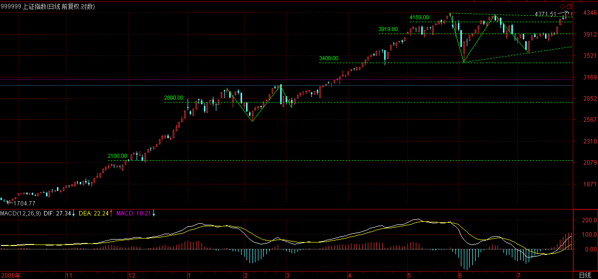
对于本ID来说，除非背驰段被破坏，否则一切就处在区间套的精确定位过程中。

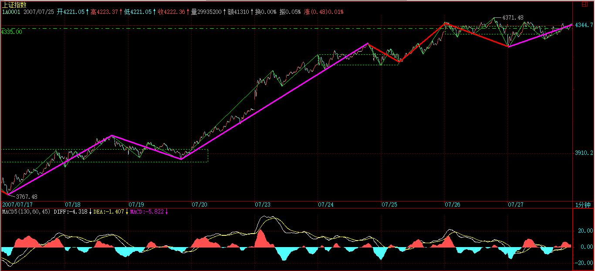
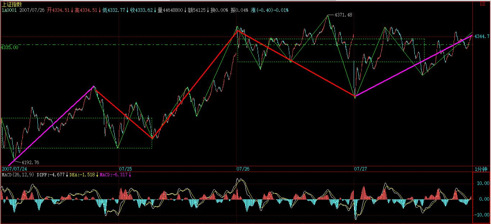
而要避免背驰段，就需要对日线的MACD走势进行周密的控制，这对于本ID当然不是一个问题，但对于那些众多举重选手，能否最终完成，本ID会在轿子上好好看着，一旦他们弄不好，本ID就会狠狠踢他们两脚，给个教训这群面首让他们长点见识。
对于散户来说，一旦行情展开，就一定要按照行情自身的规律，喊口号不是操作，股票是用来操作而不是用来喊口号的。如果大盘能保持基本在前期两高位连线上进行震荡整理，那么就将走强，否则就要面对假突破后的猛烈清理。
而由于今天没有出现早上分析的第一种走势，因此，后面可以选择的就只能是二、三、四种了。而其中的第二种，下周线无非三种：长阴线、十字星或小阴小阳、带长上影的K线。【韶山映山红】为什么不说带长下影的K线？★以后研究。】
而其中，只有长阴线这种是有巨大风险的。因此，只要看住5日线或前期两高点连线，只要这些线能守住，长阴线是不可能的。
而相应的走势，都可以持股或用部分筹码进行中枢震荡的操作来处理。
总之，下周初走势十分关键，如果先扬后抑，一旦再次上攻失败或15分钟以上短线背驰，将引发一次有力度的调整，反而先抑后扬能使得走势更轻松点。【韶山映山红】为什么不是30或者5分钟，而是“15分钟”？★以后研究。】
个股方面，今天热点开始向非成分股蔓延，这是比较好的现象，如果这现象能维持，那大盘即使调整，后面的行情也会有可期待的地方，否则就要小心了。
周日开音乐会，先下，各位周末腐败愉快，再见。
(2007-07-29 11:31:19)
对不起，在京郊腐败，没在家里，不能上传音乐，承诺的音乐会没法开了。聊赋七律一首替之，请原谅。
醉夜
缠中说禅
一樽倾洒大千尘
半榻清凉不系身
酌斗斟江筵万象
披云揽月舞三人
情耽朝暮心同死
怪变乾坤眼未新
海沸山颠酣此醉
风雷捭阖任天真
(2007-07-29 23:23:40)
人，总是需要点血性的。
今晚，天空的名字就是你--伊拉克！
一群人，来自长满战火与死亡的土地，用他们的双脚阐释了勇气与精神。
今晚，天空的名字就是你--伊拉克！
废墟覆盖着废墟，铁蹄追逐着铁蹄
勇气与精神，依然在这血与火的大地上生长。
在太多娱乐与愚乐的世界，
人，需要的是血性。
没有热血，没有奇迹，
今晚，天空的名字就是你--伊拉克！
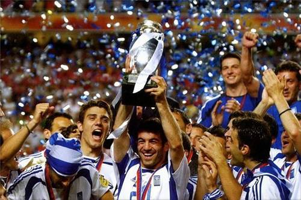
【韶山映山红】2007年7月29日晚，伊拉克在第十四届亚洲杯决赛中，1:0战胜沙特阿拉伯，历史上首次捧起亚洲杯。此前，沙特阿拉伯三度获得亚洲杯，而战乱中的伊拉克，没有安定的训练场，没有自己的主场，甚至球队的23名球员都是在亚洲杯开赛前一天才凑齐。就是这样的环境下的一支足球队，历史性的闯入决赛，并且历史性的捧起亚洲杯的冠军奖杯，伊拉克用自己的行动震撼了亚洲足坛，把所有的赞美之词都用在他们身上也不为过。“体育，从来不是单纯的物质条件的比较。否则，你就难以解释为什么我们会一次又一次地为以弱胜强而感动得落泪。支撑伊拉克队员一路走到底的，是因为他们渴望用足球场上的胜利团结积弱不振的祖国，是因为他们对足球单纯的热爱和痴狂，是因为人性的美丽……”】
(2007-07-30 15:19:35)
上周说得很清楚，只要现在的举杠铃者能顶住，空翻多就更多了。今天，昨晚伊拉克的精神大概也给了举杠铃者一点血性，所以今天，这群人动用所有力量，最终把该顶住的顶住了。
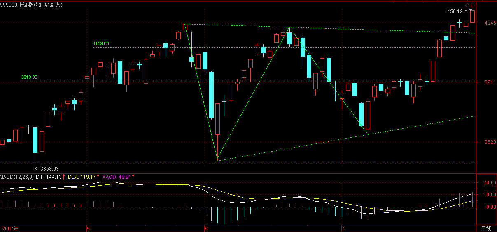
市场就是这样的一个生物链，本ID这种第一波进去的，等着4000点上进去的抬，而4000点进去的，顶住4300点，自然有新一波人进来。
所以，现在4000点进来的也进退自如了，当然，如本ID者，就更自如了，上面已经有了两层保护膜。
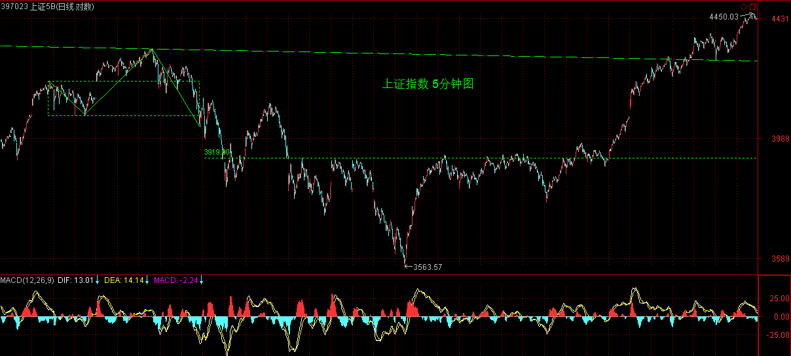
但上周说得很清楚，本周周线上是选择第二还是第三种走势，是一个关键，如果是第二种，那么周线上将有长上影，而第三种，调整也会以日线形式产生。所以，正如周末说的，先扬后抑，后面的调整压力就大了，今天的走势，就为后面酝酿震荡。【韶山映山红】上周说的四种：“站在周线的角度，无非四种：一种是本周的上影线调整；二是下周的周K线调整。前者是弱的，后者是强的。当然，还有一种更强的，就是下周继续拉长阳，中间有日的跳水洗盘，再下周才真调整。最强的就是强力夹空，连收N根周阳，全部调整以日线完成。”】

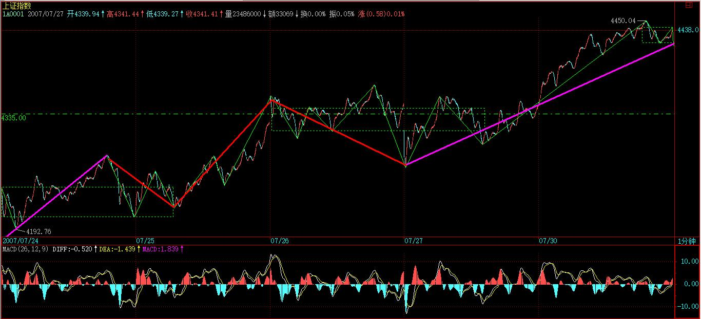
月线上，明天是收盘，所以，站在第三波4300点进来资金的角度，一个十字星是最理想的。而对于第二波4000点进来的，一个阴线也是可以接受的，只要不破4335点就可以。【韶山映山红】4335是530的高点。】当然，对于本ID这种3600点进来的，大阴线也无妨，不过又提供一个短差机会而已。因此，明天开始的三天，就是4300点进来与4000点进来两波资金的游戏，本ID继续看戏，偶尔三国演义一把。
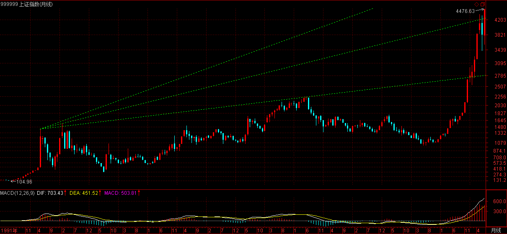
个股方面，今天轮动可以，但地产等有调整压力，目前，关键看成分股里未启动的，和有题材的成分股能否跟上。换言之，就是4300点进来的一批，能否坚决顶住，他们顶住，前两波也不会故意害他们，因为他们顶住，就有第四波进来，要害，也害那第N波的。当然，这N是可以等于3的。
忙，要先下，再见。
本课目录
教你炒股票65：再说说分型、笔、线段人气，在震荡中汇聚。出题考考各位，有空的都请进来。无论多空，都必须要进的一步。正在去机场的路上在等待利空落地的日子里刚起来，下午解不了盘。该来的都来了,你还需要什么?打狗棒下，星火正燎原。对不起，今天收盘后解不了盘。说说昨天的走势应酬前，说说今天的大盘大盘周线上的四种演化分析对不起，刚回，说两句。七律：醉夜今晚，天空的名字就是你--伊拉克！先扬后抑，酝酿震荡。